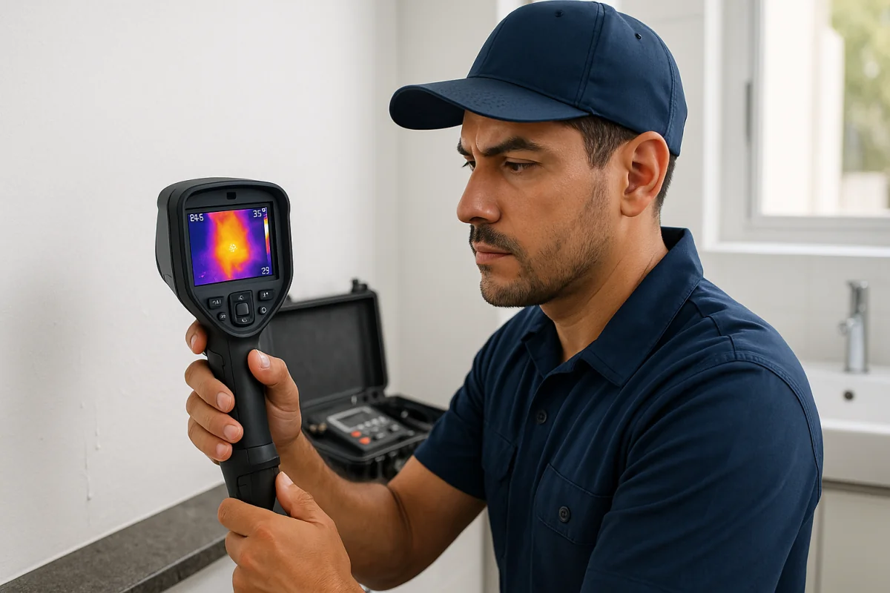
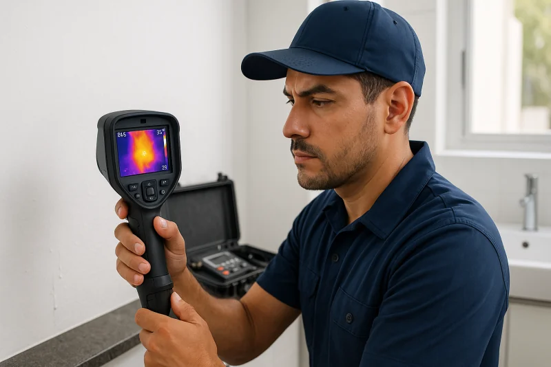

Localización precisa con equipo especializado: geófono acústico, cámara termográfica, detector de gas. Encontramos fugas ocultas sin romper a ciegas.
WhatsApp: 52 667 392 2273 · Llamadas: 667 392 2273
Contactar por WhatsApp
Localizamos la fuga con precisión de centímetros, sin romper toda la pared o piso
Solo rompes donde está la fuga, ahorras en demolición y reconstrucción
En minutos encontramos fugas que tomarían días o semanas buscando a ciegas
Encuentra fugas antes de que causen daño estructural o explosión (gas)
Amplifica el sonido de agua escapando a través de muros, pisos o tierra. Detecta fugas en tuberías de agua enterradas o empotradas. Precisión de 10-30cm.
Detecta diferencias de temperatura causadas por fugas de agua. Ideal para fugas en muros, techos y calefacción. No invasivo, sin romper nada.
Sensor de alta sensibilidad para fugas de gas LP o natural. Alarma sonora y visual. Identifica fugas imperceptibles al olfato. Seguridad garantizada.
Cámara endoscópica para inspeccionar dentro de tuberías, drenajes y espacios ocultos. Identifica obstrucciones, roturas y fugas en tiempo real.
Prueba con manómetro en sistemas cerrados. Mide pérdida de presión en tiempo determinado. Confirma si hay fuga aunque no sepamos dónde.
Tinte especial no tóxico que se añade al agua del tinaco. Rastrea el camino de fugas en sistemas complejos. Aparece en el punto de fuga.
Te hacemos preguntas: ¿cuándo empezó?, ¿dónde ves humedad?, ¿el medidor gira sin usar agua? Esto nos ayuda a elegir el equipo adecuado.
Buscamos señales evidentes: manchas, humedad, moho, pisos hinchados, salitre. Revisamos medidor para confirmar consumo anormal.
Usamos geófono, cámara termográfica o detector según el caso. Escaneamos áreas sospechosas hasta localizar el punto exacto de la fuga.
Marcamos con precisión dónde está la fuga. Te mostramos evidencia (imagen térmica, sonido amplificado) y explicamos el siguiente paso.
Te cotizamos la reparación: cuánto romper, cambio de tubería, sellado, reconstrucción. Decides si reparamos inmediato o después.
Tuberías de agua potable en muros, pisos o enterradas. Agua fría o caliente. PVC, cobre, fierro galvanizado, PEX. Con geófono o termografía.
Tuberías de gas, conexiones de estufa, calentador, secadora. Fugas visibles u ocultas. Detector electrónico de alta sensibilidad. Urgente por seguridad.
Tubería de agua que pasa por losa y gotea en plafón. Difícil de localizar a simple vista. Termografía muestra el recorrido exacto de agua.
Tubería enterrada que causa pasto mojado, charcos o hundimientos. Geófono detecta sonido de agua bajo tierra sin excavar todo.
Mezcladora empotrada o tubería tras muro que gotea dentro de la pared. Humedad en el reverso. Termografía localiza sin picar todo.
Pérdida de agua en alberca, cisterna o tinaco. Colorante trazador muestra por dónde escapa. Medición de nivel confirma pérdida anormal.
No esperes a que cause daño estructural o una factura de agua enorme. Detección temprana ahorra dinero y problemas.
Solicitar DetecciónLa cotización depende del tipo de instalación, el área que debemos revisar, la accesibilidad y el equipo necesario. Antes de comenzar te explicamos el alcance de la detección y te damos una cotización clara.
Geófono: precisión de 10-30cm. Termografía: muestra el área caliente/fría. Detector de gas: señala concentración máxima. En el 90% de casos encontramos la fuga en la primera visita.
No. La detección es NO invasiva. Solo rompemos después de ubicar el punto exacto Y si autorizas la reparación. Primero detectamos, luego cotizamos, luego reparamos.
Detección básica: 30 minutos a 1 hora. Casos complejos (casa grande, tubería profunda): 1.5-3 horas. Te damos estimado al llegar según el caso.
Una fuga muy pequeña o intermitente puede requerir más de una prueba. Si la primera revisión no permite ubicarla, te mostramos lo observado y acordamos contigo el siguiente paso antes de hacer trabajo adicional.
No, son servicios separados. Detección localiza la fuga, luego te cotizamos reparación aparte. Si decides reparar con nosotros, descontamos el costo de detección.
"Llevaba meses con humedad en la pared sin saber de dónde. Usaron una cámara y encontraron la fuga exacta. Rompieron solo 40cm y la repararon. Increíble."
— Verónica L., Chapultepec"Mi recibo de agua estaba altísimo. Con el geófono encontraron una fuga bajo el patio. Sin excavar a lo loco, fueron directo al punto. Muy profesionales."
— Alberto C., Tres Ríos"Olía a gas pero no sabía de dónde. Vinieron con detector y encontraron fuga en conexión del calentador. Rápido y seguro. Excelente servicio."
— Diana R., La CampiñaContacta ahora por WhatsApp o teléfono. Servicio de detección con equipo especializado.
Somos especialistas en detección de fugas en Culiacán con equipo profesional de última generación. Contamos con geófono acústico, cámara termográfica, detector de gas y videocámara endoscópica. Más de 15 años localizando fugas ocultas.
Contáctanos por WhatsApp para agendar. Te haremos preguntas sobre las señales que has notado para llevar el equipo adecuado.
Enviar mensaje por WhatsApp